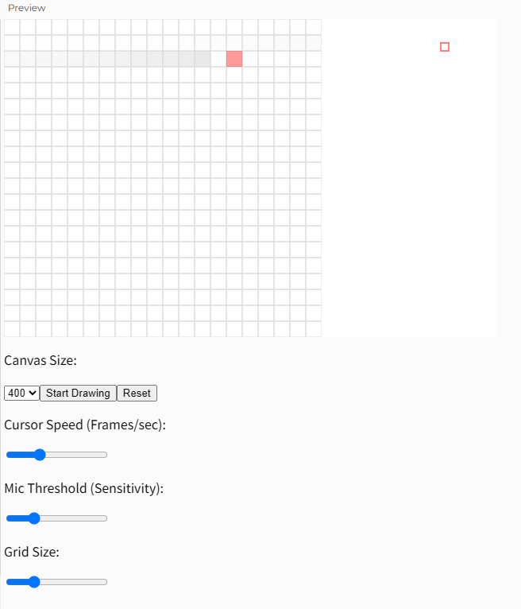

예술가를 위한 목소리 드로잉 툴 - Mic Painter
Mic Painter는 손이 아닌 목소리로 그림을 그리는 인터랙티브 캔버스입니다. 예술가의 표현력과 집중력을 실험하며, 단 한 번의 그리기와 단 한 번의 지우기를 통해 창작과 정리의 과정을 경험하게 합니다.
🎤 프로젝트 실행하기'예술가를 위한 코딩'이라는 수업 주제에 맞춰, 전통적인 손 대신 목소리라는 감각을 창작 도구로 삼아 보았습니다. 예술가는 도구에 얽매이지 않고 자신의 감각을 다채롭게 표현할 수 있어야 한다는 메시지를 담고 있습니다.
사용자의 목소리 크기에 따라 셀이 회색 또는 검정으로 채워지며, 커서는 자동으로 한 칸씩 이동하며 화면을 스캔합니다. 한 번의 드로잉이 끝나면 반대로 역순으로 지우기 단계가 진행되고, 마지막엔 자동 저장됩니다.
사용자는 목소리만으로 드로잉에 참여하며, 소리의 감정과 강도에 따라 색이 입혀지는 과정을 감상할 수 있습니다. 시각과 청각의 연결, 창작과 비움의 미학을 함께 느껴보세요.